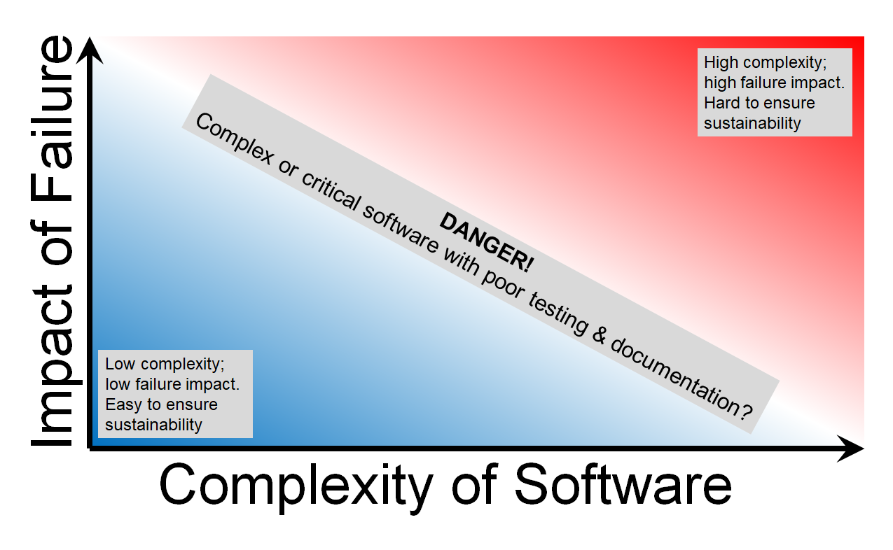

---
redirect_from:
  - "/risk-assessment/risk-assessment"
title: |-
  Risk Assessment
pagenum: 51
prev_page:
  url: /research_compendia/research_compendia.html
next_page:
  url: /risk_assessment/01/longreadriskassessment.html
suffix: .md
search: risk software too assessment help jobs sustainable wont get few seconds matrix impact case needs submit choose appropriate concepts project little unsustainable much able take just gets off right foot theyre whats complexity richard writing deciding manage tldr longer read assessments sometimes formal procedures ensure activity safe thought moment coffee bus coming different using approach described below really work successful very popular quantifying going youre interested axis measures exposure mishap further origin safeguards needed acceptable vs figures riskmatrix png our axes studies illustrate works small department cluster names varying according simple pattern tedious wants outside play therefore decides short shell

comment: "***PROGRAMMATICALLY GENERATED, DO NOT EDIT. SEE ORIGINAL FILES IN /../content***"
---

    <main class="jupyter-page">
    <div id="page-info"><div id="page-title">Risk Assessment</div>
</div>
    
<div class="jb_cell">

<div class="cell border-box-sizing text_cell rendered"><div class="inner_cell">
<div class="text_cell_render border-box-sizing rendered_html">
<h1 id="Risk-Assessment---deciding-how-to-manage-your-software">Risk Assessment - deciding how to manage your software<a class="anchor-link" href="#Risk-Assessment---deciding-how-to-manage-your-software"> </a></h1><h2 id="TL;DR">TL;DR<a class="anchor-link" href="#TL;DR"> </a></h2><p>Use a risk assessment to help choose the appropriate sustainable software concepts for your project. Too little and your software is unsustainable; too much and you won’t be able to Get On With It. It can take just a few seconds, but gets you off on the right foot.</p>
<h2 id="Longer-read&#8230;">Longer read&#8230;<a class="anchor-link" href="#Longer-read&#8230;"> </a></h2><p>We all use risk assessments all the time. Sometimes they’re formal procedures to ensure an activity is safe, but most of the time they’re the thought of a moment- Is this coffee too hot? Is there a bus coming? Software is no different, and using a risk assessment approach like the one described below can really help make your work successful and sustainable.</p>
<h3 id="The-risk-matrix">The risk matrix<a class="anchor-link" href="#The-risk-matrix"> </a></h3><p>A risk matrix is a very popular way of quantifying what’s going on with the thing you’re interested in. One axis measures exposure in some way, and the other the impact of a mishap. The further from the origin, the more safeguards are needed to make the risk acceptable.</p>
<p></p>
<p>In our case, we will use ‘complexity’ and ‘impact’ as the two axes. Some case studies illustrate how it works…</p>
<p>Case 1</p>
<blockquote><p>Richard needs to submit a 100 small jobs to the department cluster, with the names of the jobs varying according to a simple pattern. This is tedious and he wants to go outside and play. Therefore, Richard decides to write a short shell script to submit all the jobs. He pauses for a few seconds and asks:</p>
<p>How complicated is this? It’ll only be about 1 screen of text.</p>
<h1 id="What&#8217;s-if-it-goes-wrong?-The-jobs-won&#8217;t-submit-or-run-and-I&#8217;ll-get-some-failure-emails.">What&#8217;s if it goes wrong? The jobs won&#8217;t submit or run and I&#8217;ll get some failure emails.<a class="anchor-link" href="#What&#8217;s-if-it-goes-wrong?-The-jobs-won&#8217;t-submit-or-run-and-I&#8217;ll-get-some-failure-emails."> </a></h1><h2 id="Prerequisites/recommended-skill-level">Prerequisites/recommended skill level<a class="anchor-link" href="#Prerequisites/recommended-skill-level"> </a></h2><p>This needs writing</p>
</blockquote>
<h2 id="Summary">Summary<a class="anchor-link" href="#Summary"> </a></h2><p>Use a risk assessment to help choose the appropriate sustainable software concepts for your project. Too little and your software is unsustainable; too much and you won’t be able to Get On With It. It can take just a few seconds, but gets you off on the right foot.</p>
<h2 id="How-this-will-help-you/why-this-is-useful">How this will help you/why this is useful<a class="anchor-link" href="#How-this-will-help-you/why-this-is-useful"> </a></h2><blockquote><p>This needs writing</p>
</blockquote>

</div>
</div>
</div>
</div>

 


    </main>
    